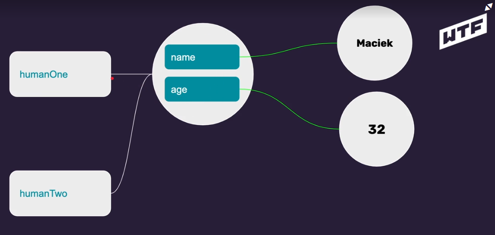

Absolutnie niczego
Choć to raczej nic dziwnego, z racji, że był to tydzień czysto organizacyjny.
Choć to raczej nic dziwnego, z racji, że był to tydzień czysto organizacyjny.
Kiedy tworzyłem swoje pierwsze strony nie używałem ich. Miałem okazję je później poznać, ale dopiero wyrabiam nawyk ich używania.
Dostępnego pod tym adresem validatora kodu nie używałem ani nie widziałem wcześniej. Wydaje się fajnym rozwiązaniem.
Wcześniej nie używałem VSC do pisania stron więc nie znam jeszcze wszystkich jego funkcjonalności. Szkielet strony to fajne rozwiązanie, choć z racji, że wcześniej używałem VSC do tworzenia projektów w django, wymagał ręcznego przestawienia "Language mode" na HTML żeby dało się tego użyć.
Miałem wcześniej do czynienia z tym narzędziem pod kątem organizacji
zadań długoterminowo.
Pierwszy raz używam go do monitorowania postępów w małych zadaniach.
Do tej pory moja wiedza kończyłą się na "oba pogrubiają" oraz "oba
pochylają". Dopiero w trakcie szkolenia (w dużej części nastawionego
na semantykę) poznałem różnicę tj:
Kiedyś używałem, później przestałem, ostatecznie zapomniałem, a
teraz mi przypomniano =)
Aby przewinąć stronę należy w odnośniku wpiać <a
href="#ID">Widoczny Teskt</a>
Istniał jednak jeden problem przy używaniu elementów ustawionych jako position: sticky. (Po przesunieciu elementy były zasłonięte) Jednym z obejść problemu było dodanie:
Ogólna zasada brzmiąca "style o większej specyficzności mają priorytet" oraz "ze stylów o równej specyficzności priorytet ma ten dodany później"
Znałem już wcześniej. I nawet mniej-więcej potrafiłem wyczuć które odwołanie jest bardziej specyficzne. Niemniej, są przypadki, które interpretowałbym inaczej. W ramach szkolenia dopiero poznałem właściwą metodę liczenia tej specyficzności (porównywalna do medali).

Jako, że wcześniej nie używałem JS to wszystko jest tu dla mnie nowe.
Skrypty dodajemy bezpośrednio przez zamknięciem znacznika body
wewnątrz tagu
<script></script>
Można też odwołać się do zewnętrznego pliku z kodem JS poprzez:
<script src="main.js"></script>
Podobnie jak w każdym języku programowania, występują tu zmienne i stałe.
Zmienne tworzymy przez polecenie
let name = 'value'
Stałe tworzymy przez polecenie
const name = 'value'
Aby wykorzystać zmienną w ramach jakiegoś stringa należy opakować
treść w ` (znaczek pod ~), a wewnątrz polecenia podać
$(nazwazmiennej), np:
SomeComand(`Some string $(some-variable)`)
Pierwsze instrukcje poznane w ramach szkolenia to alert oraz console log
Alert (powiadomienie-popup w przeglądarce) wywołujemy tak:
alert('value')
Console log (komunikat widoczny w konsoli dostępnej pod F12)
wywołujemy tak:
console.log('value')
Raczej przypomnienie niż coś nowego; Domyślnie jak definiujemy wymiary jakiegoś elementu to definiujemy rozmiary wyłącznie treści. Do ostatecznych wymiarów elementu trzeba dodatkowo dodać padding oraz border.
Można zmodyfikować sposób nadawania width/height (tak, aby ten
wymiar opisywał treść elementu WRAZ Z paddingiem i borderem poprzez
zmianę parametru box-sizing:
box-sizing: border-box;
Samo position: sticky; było mi znane już dawno. W ramach kursu dowiedziałem się natomiast dwóch rzeczy:
Kolejne przypomnienie: position ABSOLUTE ustawia element względem najbliższego przodka z parametrem RELATIVE
Korzystając z polecenia "flow" można sprawić, że element z tym parametrem jest opływany przez tekst z określonej strony.
Istnieje jednak haczyk - w momencie, gdy element opływający jest krótszy od elementu opływanego - ten zewnętrzny pojemnyk nie jest rozciągany do wysokości elementu z parametrem float.
Przykład takiej sytuacji: żółty prostokąt po lewej ma ustawione float: right. Div w którym się znajduje ma białe tło. Tło nie jest rozciągane:

Rozwiązaniem takiego problemu może być ustawienie parametru clear
dla jakiegoś obiektu (choćby pustego diva) w tym samym
kontenerze:
clear: left/right
Inne rozwiązanie to ustawienie OVERFLOW dla kontenera w którym
element z flow się znajduje
overflow: hidden
UWAGA! Przy takim rozwiązaniu, o ile kontener ma z góry narzuconą
wysokość to element z parametrem FLOW będzie ucinany.
Podobnie jak w pythonie - typów zmiennych w JS nie musimy deklarować
(są przypisywane automatycznie w zależności od danych)
Można sprawdzić typ zmiennej przez polecenie
typeof NazwaZmiennej
W sytuacji, w której mamy zdefiniowaną zmienną X
let x = 10
I zdefiniujemy nową zmienną Y równą X
let y = x
To do zmiennej Y jest kopiowany wynik zmiennej X. To znaczy obie
zmienne wskazują ten sam wynik. Y nie wskazuje na X. Dlatego też
zmiana X nie zmodyfikuje Y. Tzn. po poleceniu:
x = 5
wynik Y dalej będzie = 10
W JS można otrzymać cały kod elementu (wraz z wszystkimi jego
potomkami) poprzez polecenie:
document.querySelectir('.nazwaKlasy/#nazwaId/nazwaElementu')
To samo można było osiągnąc w jQuerry poprzez
$('.nazwaKlasy')
Na potrzeby odniesienia się do elementu w ramach JS, przy stosowaniu
nazw zgodnych z BEM takie klasy powinny mieć modifier --js np:
article__header--js
Możemy nadpisywać zawartość elementu po przechwyceniu selectora
myTitle = document.querySelector('.title1')
myTitle.innerHTML = "Salamander Krajza"
HTML mamy w plikach czy w edytorze. Jest to kod który piszemy na
podstawie którego generowana jest nasza strona.
DOM to finalny
wynik wyświetlany w przeglądarce. Źródło strony (napisane w HTML)
może być zmodyfikowane np. przez skrypty JS. Dopiero to co widzimy
finalnie w przeglądarce to DOM

Arrow functions są nie mają słowa kluczowego
function, zamiast tego są
przypisywane do stałych.
Pierwszy przykład (greet) to
funkcja bezzwrotna, która wyświetla treść w konsoli.
Druga funkcja (calculate) to
oneliner który zwraca wynik wyrażenia zapisanego po znaku
=>

var person = {
firstName: "John",
lastName : "Doe",
id : 5566,
fullName : function() {
return this.firstName + " " + this.lastName;
}
};
parentObject{
firstName: "John",
lastName : "Doe",
childObject : {
childObectSomething: "Example";
}
};
const testObject = {
firstName:"Piotr",
fullname: function(surname) {
return `${this.firstName} ${surname}`
}
};
console.log(testObject.fullname('Mr.'));
console.log(testObject['fullname']('Mr.'))
Tutaj również jest dużo analogi do pythona. Wszystkie typy proste (a więc stringi/liczby) stanowią wskazania na istniejące we wszechświecie wartości miejsca, które nie są nadpisywane. Zmiana wartości prostej ZAWSZE będzie stanowiła przepięcie do innego miejsca we wszechświecie wartości. Dlatego też jeżeli dwie zmienne mają jednakową wartość (wskazują na to samo miejsce) to aktualizacja jednej z nich odpina (tą jedną) od tej wartości i przypina do innej. Wartość drugiej zmiennej pozostaje bez zmian.
Obiektu skolei zachowują się przeciwnie. Każdy obiekt jest nowym tworem w przestrzeni wartości. W momencie kiedy wiele zmiennych ma przypisany ten sam obiekt to zmiana elementów tego obiektu z poziomu dowolnej zmiennej wpływa na wszystkie wskazania (to jest pojedynczy obiekt, poszczególne zmiennie nie mają niezależnych opii)
To czy element jest wewnątrz innego obiektu nie ma znaczenia, zasada jest dokłądnie taka sama - jeżeli przypisujemy do wartości prostej (string/liczba) to przypisujemy do konkretnego miejsca w przestrzeni i zmiany jednego wystąpienia danej wartości (jednej zmiennej) nie będą wpływać na inne.
Np. jeżeli w ramach obiektu person jest person.Age=36 i ktoś zrobi zmienną const test=person.Age a następnie zmieni person.Age albo test to drugie nie zostanie zmienione
Jeżeli w ramach obiektu jest inny obiekt i ktoś przypisze do innej zmiennej ten obiekt tj np const zmienna=person.childObject a następnie zmieni jakąś własność tego obiektu tj np zmienna.name='something' to ta zmiana zajdzie również w obiekcie person.childObject
Lista służąca do opisywania jakichś definicji/wskazówek. Może być np użyta do stworzenia bestriariusza gdzie w liście mamy
<dl>
<dt>Arachnomorf</dt>
<dd>Arachnomorf jest padatny na większość wiedźmińskich
znaków</dd>
<dl>
Tabel należy używać tylko do przechowywaniu danych które normalnie opakowuje się w tabele (jakieś liczby, statystyki itd). NIGDY do budowania layoutów
Jako, że flex jest bardzo rozbudowany warto korzystać z dodatkowych materiałów jak:
Reset to inaczej wyczyszczenie styli domyślnych przeglądarki. Ma to zapobiegać automatycznemy stylowaniu (robieniu wcięć, marginesów, pogrubień, podkreśleń itd). Raczej niepraktykowane. Lepszą metodą jest normalizacja czyli import pliku normalize.css (dostępnego w googlu) który ujednolica bazowe style przeglądarki między różnymi przeglądarkami (ten plik nadpisuje style przeglądarkowe więc niezalęznie gdzie uruchamiamy stronę wygląda jednakowo)
Poza plikiem normalize.css warto dodać też ustawienie border-sizing: border-box aby ułatwić sobie pracę z wymiarami obiektów (liczenie wymiarów które uwzględnai treść+padding+ramkę jest bardziej intuicyjne niż samodzielne dodawanie paddingu)
html {
box-sizing: border-box;
}
*, *:before, *:after
box-sizing: border-box;
}
background-position: center center - określa co ma być widoczne jeżeli zmniejszamy okienko przeglądarki (Czy jakaś krawędź ma być zawsze widoczna, czy może środek); pierwsze center to w pionie (y), drugie w poziomie (x); UWAGA- można podać też % albo odległości zamiast top/left/bot/right
background-repeat: repeat/repeat-x/repeat-y/no-repeat/round/space - round powtarza tło ale jednocześnie ma pewne skalowanie wbudowane; space - nigdy nie przycina, powtarza
background-attachment: scroll/fixed/local ; scroll to domyślny parametr, scrolluje się ze stroną, fixed przykleja grafikę w miejscu (zaczynamy ją zakrywać ale nie przesuwa się względem startu;
background-attachment: local używamy razem z overflow:hidden i sprawia, że tło jakiegoś elementu scrolluje się razem z treścią tego elementu (który posiada content większy od niego samego tzn. da się go scrollować)
background-origin: padding-box/border-box/content-box - miejsce od którego liczymy background-position
background-clip: border-box/padding-box/content-box - określa w którym miejscu tło powinno być ucinane. domyślnie jest to border-box czyli tło jest na cały element. jeżeli przestawimy na content-box to tło nie pokryje pustych przestrzeni jakie ma padding a będzie tylko i wyłącznie przy samej treści
background-color: rgba(255, 255, 255, 0.4) - tła z przezroczystością
background-size: auto/cover/contain/ - 100px 100px - określamy ręcznie wymiary; auto - domyślne wymiary grafiki; cover - zawsze wypełnia całość elementu (jest rozciągany, może być ucinany żeby wypełnić całość) contain - zawsze się mieści cały na ekranie ale może zostawiać puste przestrzenie jak proporcje nie pasują
background: linear-gradient(....) - generowane ze strony cssgradient.io